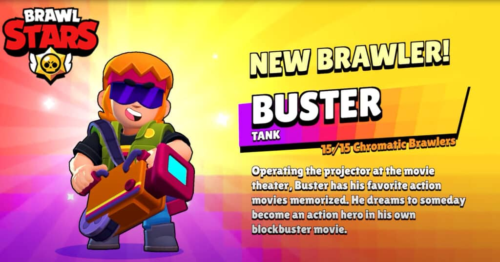

Buster

Categoría: Tanque / Apoyo
- Vida: ~9600
- Velocidad: Normal
- Ataque: Cono de energía (~1980) que hace más daño a corta distancia
- Súper: Escudo frontal que bloquea y refleja proyectiles
- Hypercharge: Refuerza su rol de tanque para proteger al equipo con presión ofensiva
Mejor Build: Montaje (Estelar) + Luz de emergencia (Gadget)
Descripción: Tanque defensivo que lidera pushes.
Volver a Tanques